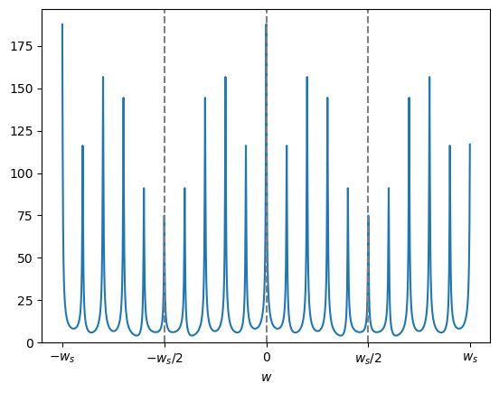
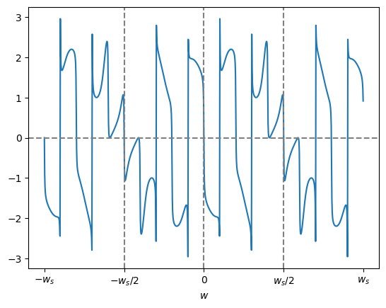
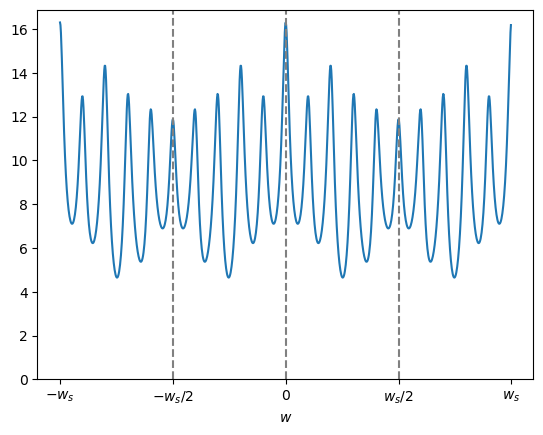
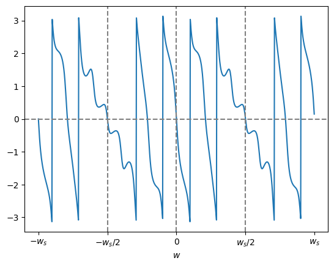
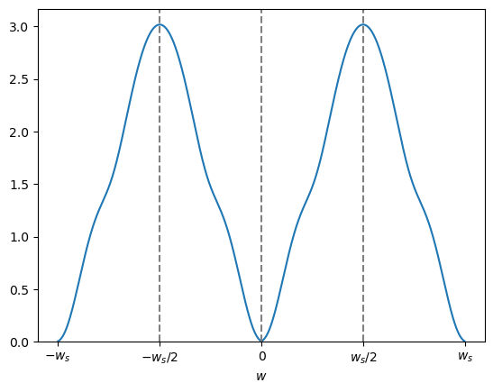
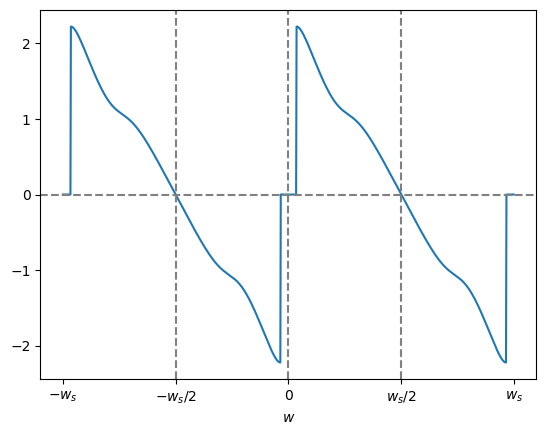

次にZ変換とDFTの関係について説明したいと思いますが、そのためには周期性時間領域ディジタル信号のZ変換について考える必要があります。
まず$\textrm{N}$ を有限な正の整数としたとき $f[i]$ を周期 $\textrm{N}$ の周期性時間領域ディジタル信号とします。
ただし $|f[i]| < \infty$ とします。
また $f_1[i]$ を時刻 $i=0$ から $i=\textrm{N}-1$ までの $f[i]$ の値とします。
つまり $f[i]$ は
で表されます。
ここで mod は剰余演算(modulo)です。
さて $f[i]$ から最初の N 個だけ信号値を取り出した信号列、つまり
\[ \{ f_1[0], f_1[1], \cdots, f_1[\textrm{N}-1], 0, 0, \cdots \} \]の(片側) Z 変換を
\[ \textrm{F}_1(z) = \sum_{i=0}^{\textrm{N}-1} \{ f_1[i] \cdot z^{-i} \} \]
とします。
すると $f[i]$ の時刻 $i = \textrm{N}$ から $i = 2\textrm{N}-1$ まで信号値を取り出した信号列、つまり
のZ変換は
\begin{align*} \sum_{i=\textrm{N}}^{2\textrm{N}-1} \{ f_1[\ i \ \textrm{mod}\ \textrm{N} \ ] \cdot z^{-i} \} &= f_1[0] \cdot z^{-\textrm{N}} + f_1[1] \cdot z^{-(\textrm{N}+1)} + \cdots + f_1[\textrm{N}-1] \cdot z^{-(2\textrm{N}-1)} \\ &= \left \{ f_1[0] + f_1[1] \cdot z^{-1} + \cdots + f_1[\textrm{N}-1] \cdot z^{-(\textrm{N}-1)} \right \} \cdot z^{-\textrm{N}} \\ &= \textrm{F}_1(z) \cdot z^{-\textrm{N}} \end{align*}
になります。
同様に考えると、$n$ を 0 以上の整数とした時、$f[i]$ の時刻 $i = n\cdot\textrm{N}$ から $i = (n+1)\cdot\textrm{N}-1$ まで信号値を取り出した信号列のZ変換は
\[
\textrm{F}_1(z) \cdot z^{-n\cdot\textrm{N}}
\]
となります。
よって $f[i]$ のZ変換は
\begin{align*} \textrm{F}(z) &= \sum_{n=0}^\infty \left \{ \textrm{F}_1(z) \cdot z^{-n\cdot\textrm{N}} \right \} \\ &= \textrm{F}_1(z) \cdot \sum_{n=0}^\infty \left \{ z^{-n\cdot\textrm{N}} \right \} \\ \end{align*}となりますが、後の総和は初項 1、公比 $ z^{-\textrm{N}}$ の無限等比級数の和ですので、$|z^{-\textrm{N}}| < 1$ つまり $|z|>1$ のときに収束して次の式が求まります。
$\textrm{N}$ を有限な正の整数としたとき $f[i]$ (ただし$|f[i]| < \infty$)を周期 $\textrm{N}$ の周期性時間領域ディジタル信号とする。
また $f_1[i]$ を時刻 $i=0$ から $i=\textrm{N}-1$ までの $f[i]$ の値とする。
さらに信号列
の(片側) Z 変換を
\[ \textrm{F}_1(z) = \sum_{i=0}^{\textrm{N}-1} \{ f_1[i] \cdot z^{-i} \} \]とする。
$f[i]$ のZ変換を $\textrm{F}(z)$ としたとき、収束領域 $|z| > 1$ 内の $z$ に関して
\[ \textrm{F}(z) = \textrm{F}_1(z) \cdot \frac{1}{1-z^{-\textrm{N}}} \]となる。
では例を示します。
周期 $\textrm{N} = 10$ とし、
\[ f_1[i] = \{\ 1,\ -4,\ 3,\ -2,\ 5,\ 9,\ 3,\ -2\ ,1\ ,5\ \} \]
とします。
また今回はサンプリング周波数を $f_s = 100$ [Hz] 、サンプリング間隔を $\tau = 1/f_s = 0.01$ [秒] とします。
この時の $f[i]$ は図1となります。
では $f[i]$ から $\textrm{F}(z)$ を求めてそのグラフを示そうと思いますが、そのまま $\textrm{F}(z)$ のグラフを描いても人間には分かりにくいので座標変換式
\[ z = \textrm{e}^{ s \cdot \tau } = \textrm{e}^{ \sigma \cdot \tau } \cdot \textrm{e}^{ j \cdot w \cdot \tau } \]
を用いてラプラス変換 $\textrm{F}(s)$ に変換します。
さらに収束条件 $|z| > 1$ は $\sigma > 0$ に相当しますので、$\sigma$ を 1、 10、100 と変化させた時の絶対値 $|\textrm{F}(s)|$と偏角 $\angle \textrm{F}(s)$ のグラフを順に示します。
※ $w_s = 200\pi$ はサンプリング角周波数 [rad/秒]
絶対値 $|\textrm{F}(s)|$
偏角 $\angle \textrm{F}(s)$
※ $w_s = 200\pi$ はサンプリング角周波数 [rad/秒]
絶対値 $|\textrm{F}(s)|$
偏角 $\angle \textrm{F}(s)$
※ $w_s = 200\pi$ はサンプリング角周波数 [rad/秒]
絶対値 $|\textrm{F}(s)|$
偏角 $\angle \textrm{F}(s)$
参考までに、上のグラフを描画したプログラムはこちらです。
準備中